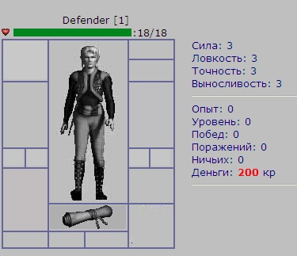
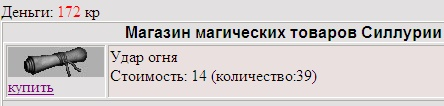
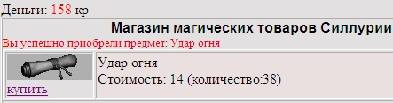
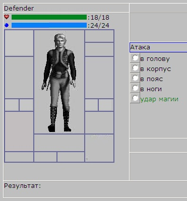
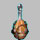
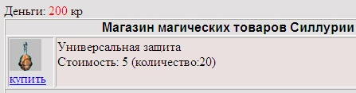
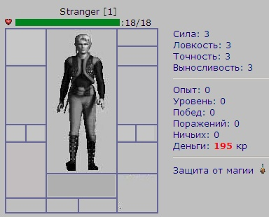

|
Курсы
Регистрация
Методика
Оглавление
Для учащихся

Статьи
Инструменты
Контакты
|
Урок 9.
Использование магии
9.1.
Магические свитки
.
Так как мы создаем игру под названием "Клуб Меча и Магии",
наступило время подумать и об использовании магических свитков. Однако для того,
что воспользоваться свитком, нужно обладать еще одной характеристикой -
интеллектом. Обычно интеллект свойственен магам, но мы для упрощения позволим
владеть этим статом кому угодно. Единственное - поднятие интеллекта всегда
приводит к тому, что игрок не добирает в других статах - силе, ловкости и т.д.
Давайте добавим поле интеллект в нашу самую первую таблицу
users.
Character_Intelligence INT DEFAULT 0, /*Интеллект
перса */
Character_Intelligence_Total INT DEFAULT 0,
/*Интеллект перса с учетом вещей*/ |
Обязательным условием использования магии сделаем
то, что персонаж должен обладать характеристикой "интеллект" больше нуля.
Только в этом случае ему станут подвластны магии стихий.
Давайте создадим два свитка для огненной и воздушной магии. Вот
они:
 Удар огня
Удар огня |
 Удар
воздуха Удар
воздуха |
Обычно при использовании свитка тратится мана. Мана
в компьютерных играх - очки, определяющие количество специальной магической
энергии, расходуемой на различные заклинания и прочие магические способности.
Таким образом, сразу возникает необходимость учитывать очки маны у нашего
персонажа. Безусловно нам понадобятся еще пару полей в таблице
users. Вот они:
Character_CurMana INT DEFAULT 0, /* текущие очки
маны */
Character_MaxMana INT DEFAULT 0, /* максимальные
очки маны */ |
Наши свитки, при использовании тоже будут забирать
какое-то количество маны персонажа, что определится в поле
ManaCost таблицы
Items_List (справочника предметов).
Давайте, пользуясь случаем, добавим два свитка в справочник
предметов.
/* немного магических свитков */
INSERT INTO Items_List (IL_ID,ItemType,ItemNo,ItemName,Item_StateCost,Item_Image,
ItemSlotName,Item_Level, Item_FullLife,ManaCost,Min_Damage)
VALUES(14,11,1,'Удар огня',14,'mscroll1.jpg','Scroll',1,30,3,5);
INSERT INTO Items_List (IL_ID,ItemType,ItemNo,ItemName,Item_StateCost,Item_Image,
ItemSlotName,Item_Level, Item_FullLife,ManaCost,Min_Damage)
VALUES(15,12,1,'Удар воздуха',14,'mscroll2.jpg','Scroll',1,30,3,5);
|
Как
Вы видите, за каждый ход игрока, будет использоваться 3 очка маны (ManaCost
= 3).
9.2.
Слот для свитков.
Вполне естественно, что для использования свитка в бою, его нужно
поместить в специальный слот. Ранее мы рассматривали слоты для оружия и
доспехов, научились с ними работать, перенося в них предметы из рюкзака и
обратно. Теперь нам нужно реализовать работу со слотом для хранения и
использования магических свитков.
Для начала дополним таблицу
users еще одним полем -
Scroll_Slot, в котором и будет располагаться
одеваемый на время поединка свиток.
|
Scroll_Slot INT DEFAULT 0, /*слот свитка*/ |
Давайте поэкспериментируем с персонажем
"Defender" и добавим ему
напрямую свиток огня прямо в его рюкзак:
|
INSERT INTO Items (IT_ID,IL_ID,Item_Owner,Item_Position,Item_CurrentLife)
VALUES(4,14,2,2,0); |
Мы добавили действительно свиток огня, потому что
значение поля
IL_ID его
равно 14, точно как в справочнике предметов. Кроме того, персонаж с ником
"Defender" имеет
USER_ID = 2, чему
соответствует поле
Item_Owner из таблицы
Items.
Поместите картинки свитков
(mscroll1.jpg
и mscroll2.jpg)
в папку
Items, войдите в игру под ником
"Defender". Зайдите в
раздел Рюкзак, чтоб посмотреть на наш свиток.
Для того, чтоб иметь возможность узнать, содержится ли что-то
в слоте для свитков, мы должны немного изменить наш файл, отвечающий за рюкзак -
inventory.phtml. В частности изменения коснутся
следующего:
// Узнаем, что в слотах и уровень Персонажа ?
$query = "SELECT * FROM users WHERE Nick_Name='$aNickName'";
$result = mysql_query($query) or die("Query failed : " . mysql_error());
$aRow = mysql_fetch_array( $result);
$aHelmet_Slot = $aRow["Helmet_Slot"];
$aShield_Slot = $aRow["Shield_Slot"];
....
....
$aScroll_Slot = $aRow["Scroll_Slot"]; // добавили
(для свитков)
..... |
Слот
Scroll_Slot
работает так же само,
как и остальные слоты для амуниции (кроме колец), поэтому других изменений кода
не понадобится. (Ну разве что добавить еще одну глобальную переменную в функцию
DrawItem)
Кроме этого для отображения надетого свитка, понадобится
добавить его отображение таким кодом на HTML:
|
<td width="99" height="34" align="center" valign="center" colspan="2"><?
echo DrawItem("Scroll");
?></td> |
Теперь мы можем спокойно надевать и снимать свиток. Надетый на нашем персонаже
свиток огня на странице браузера выглядит так:

Измененный файл inventory.phtml Вы
найдете здесь.
9.3.
Магазин магических
свитков.
В предыдущем пункте 9-го урока мы напрямую добавили свиток огня
прямо в рюкзак персонажа. В реальной игре это неприемлемо, поэтому игрок
должен иметь возможность приобретения свитков.
Давайте сделаем магическую лавку, которая будет поставлять игроков
магическими свитками разных стихий. У нас уже есть опыт создания магазинов,
поэтому создать такую лавку не должно представлять для нас никакого труда.
|
На Центральной площади наша магическая лавка будет выглядеть так. |
Изменив немного текст нашего файла, ответственного за отображение Центрально
Площади, мы сможем заходить в это здание.
|
<div style="position:absolute;left:160px;top:150px;width:149px;
height:136px; z-index:12;z-index:12"><IMG SRC=Items/Towns/Silluria/church.gif
CLASS=aFilter onmouseover="imover(this)" onmouseout="imout(this)"
onclick="gotoMagicShop()" ALT="Магическая
лавка" width="58" height="61" ></div> |
В
вышеприведенном слое, мы отобразили картинку магической лавки и добавили функцию
gotoMagicShop,
которая позволит нам входить в лавку. На
JavaScript реализация этой функции выглядит так:
function gotoMagicShop()
{
location.href='magicshop.phtml?itemtype=11&mode=1&NickName=<?php
echo "$aNickName"; ?>';
} |
По аналогии с кузницей, нам понадобится таблица
товаров, которые будут продаваться в магической лавке. Вот эта таблица с
названием
magicshop:
/*таблица предметов для продажи в магической лавке*/
CREATE TABLE `magicshop`(
`SM_ID` BIGINT(20) unsigned NOT NULL auto_increment,
/* идентификатор предмета в магазине */
`IL_ID` INT(4) unsigned NOT NULL, /* ID предмета в
справочнике предметов */
`Town` INT(2) unsigned NOT NULL, /* Город, где
расположено здание */
`QTY` INT NOT NULL,
/* количество предметов */
PRIMARY KEY (`SM_ID`),
KEY (`Town`)
) TYPE=MyISAM; |
Давайте сразу разместим в магазине несколько
свитков, добавив их в нашу только что созданную таблицу magicshop.
INSERT INTO magicshop (Town,IL_ID,QTY)
VALUES(1,14,40); --
свиток огня
INSERT INTO magicshop (Town,IL_ID,QTY)
VALUES(1,15,50); --
свиток воздуха |
Теперь нам остается создать файл
magicshop.phtml для непосредственной реализации магазина.
Вы заметили, что при вызове скрипта
magicshop.phtml мы передаем в него несколько параметров (itemtype=11&mode=1).
В справочнике предметов 11 itemtype соответствует свитку
"Удар огня". То есть при входе в магическую лавку, мы сразу попадает на полку с
этими товарами (товарами относящимися к категории огненной стихии) .
mode=1 обозначает режим отображения лавки. Он будет у нас всегда
равен единице., так как режима починки свитков не существует (хотя в дальнейшем,
в качестве домашнего задания, можете создать режим подзарядки свитков).
Меню магазина можно реализовать так:
<?php
print( '<td width="138" height="115"
rowspan="2" valign="top">' );
print( 'Оружие:<br>' );
print( '<a href=magicshop.phtml?NickName='.$aNickName.'&mode=1&itemtype=11>Свитки
огня</a><br>' );
print( '<a href=magicshop.phtml?NickName='.$aNickName.'&mode=1&itemtype=12>Свитки
воздуха</a><br>' );
print( '<a href=magicshop.phtml?NickName='.$aNickName.'&mode=1&itemtype=13>Свитки
воды</a><br>' );
print( '<a href=magicshop.phtml?NickName='.$aNickName.'&mode=1&itemtype=14>Свитки
земли</a><br>' );
print('<HR>');
print( '</td>' );
?> |
Параметр
&itemtype
будет вызывать показ полки
соответствующей магической стихии. Как вы знаете пока у нас представлен скудный
ассортимент (по одному типу свитков) только в стихиях огня и воздуха.
Давайте отобразим товары магазина. На PHP
это будет выглядеть следующим образом:
if ($aMode==1){
// Отобразим содержимое магазина
$query = "SELECT il.IL_ID, il.ItemName,
il.ItemType, il.ItemNo, il.Item_Image, il.Item_StateCost, s.QTY FROM
magicshop s inner join Items_List il on s.IL_ID=il.IL_ID WHERE
il.ItemType='$aItemType'";
$result = mysql_query($query) or
die("Query failed : " .
mysql_error());
while ($aRow =
mysql_fetch_array($result)) {
$aItem = $aRow["IL_ID"];
$aItemType = $aRow["ItemType"];
$aItemNo = $aRow["ItemNo"];
$aItemQty = $aRow["QTY"];
$aItemImage = $aRow["Item_Image"];
$aStateCost = $aRow["Item_StateCost"];
$aItemName = $aRow["ItemName"];
print('<tr>');
print('<td width="10%" valign="top"><img
src=Items/'.$aItemImage);
print("><br><a href=magicshop.phtml?NickName=$aNickName&itemtype=$aItemType&item=$aItem>купить</a></td>");
print('<td width="90%" valign="top" bgcolor=eae0e0>'.$aItemName.'<br>Стоимость:
'.$aStateCost.' (количество:'.$aItemQty.')</td>');
print('</tr>');
}
} |
Как
Вы заметили, мы создаем запрос к таблицам magicshop и
Items_List и формируем нашу витрину товаров, согласно
выбранной стихии ( заданной параметром
$aItemType)
В браузере мы получим примерно такую картину:

Нажатие на ссылку купить, приводит к вызову этого же скрипта
с передачей ему параметра
&item. Этот параметр
представляет собой не что иное как IL_ID
из справочника предметов. Получив этот параметр, мы должны
создать копию предмета из справочника в нашем рюкзаке. Вот как это реализуется:
if ($iBuy){ // Была
инициирована покупка
// Сколько вещей этого типа?
$query = "SELECT
s.SM_ID,s.QTY,il.Item_StateCost,il.ItemName,il.ItemType,il.ItemNo FROM
magicshop s inner join Items_List il on s.IL_ID=il.IL_ID WHERE il.IL_ID
= '$aItem'";
$result = mysql_query($query) or
die("Query failed : " .
mysql_error());
$aRow = mysql_fetch_array( $result);
$aSMID = $aRow["SM_ID"];
$aQTY = $aRow["QTY"];
$aStateCost = $aRow["Item_StateCost"];
$aItemName = $aRow["ItemName"];
if ($aQTY-- > -1){ //
есть ли вообще эти вещи?
$lNoMoney=false;
if ($aMoney >= $aStateCost){
// хватит ли денег купить вещь?
$aMoney = $aMoney - $aStateCost;
// Засунем в рюкзак купленную вещь!
$query = "INSERT INTO
items(IL_ID,Item_Owner,Item_Position,Item_CurrentLife)";
$query .= "Values ('$aItem','$aUserID','2','0')";
$result = mysql_query($query,$link) or
die("Query failed : " .
mysql_error());
// Уменьшим деньги
$query = "UPDATE users SET Character_Money='$aMoney'
WHERE Nick_Name='$aNickName'";
$result = mysql_query($query) or
die("Query failed : " .
mysql_error());
// Уменьшим кол-во предметов в магазине
$query = "UPDATE magicshop SET QTY='$aQTY' WHERE
SM_ID='$aSMID'";
$result = mysql_query($query) or
die("Query failed : " .
mysql_error());
}else
{
$lNoMoney=true;
}
}
} |
Данный фрагмент кода, уточняет есть ли покупаемый предмет на полке магазина
(пока мы думали кто-то другой мог купить последний предмет этого типа - игра
ведь у нас многопользовательская!) Затем мы создаем предмет такого типа в
рюкзаке нашего игрока и не забываем уменьшить количество денег у персонажа и
количество предметов на полке магической лавки.
После покупки, мы увидим такую картину в браузере:

Полный текст файла magicshop.phtml Вы можете увидеть
здесь.
9.4.
Бой с использованием
магии
Как же использовать купленный нами свиток в бою? Давайте для
простоты реализуем удар магии, как дополнительную зону поражения. Мы займемся
этим чуть позже, а сейчас нужно наделить какого-нибудь из персонажей магическими
способностями. Как Вы уже знаете, за магические способности отвечает параметр
Character_Intelligence, который должен быть больше нуля.
Давайте договоримся, что 1 очко интеллекта дает 6 пунктов
магической энергии (маны). Теперь немного изменим
SQL
скрипт, добавляющий игрока
Defender, так чтоб было задано значение в поле
Character_Intelligence.
INSERT INTO users (Nick_Name,
User_Pass,
Character_Money,
Character_Level,
User_Birth_Day,
Character_Intelligence)
VALUES('Defender','1234','200','1','2008-03-11','4'); |
Значение этого поля равно 4, значит магической энергии у нас будет 6*4 = 24
пункта.
Теперь нам предстоит менять наш файл поединка
battle.phtml, чтоб учитывать использование
магической атаки. Для персонажей, у которых есть интеллект, кроме полоски
здоровья, должна отображаться также полоска магической энергии. Это легко
сделать таким образом:
<?php if ( ($aShowCurMana > 0) && ($aShowScroll_Slot
<> 0) ){ ?>
<!-- Тут размещены очки магии (мана) нашего
персонажа -->
<table cellspacing=0 cellpadding=0 border="0" bordercolor="#000080"><tr><td>
<NOBR><div id=MP1>
<IMG SRC="items/mana.gif" WIDTH=10 HEIGHT=10 ALT="Уровень магии"> <IMG
SRC=items/1silver.gif WIDTH=1 HEIGHT=10 ALT="Уровень магии" name=MP11><IMG
SRC=items/1silver.gif WIDTH=1 HEIGHT=10 ALT="Уровень магии" name=MP12>:</div>
</nobr>
</table>
<?php } ?> |
Переменная
$aShowCurMana
отвечает за количество магической энергии, а
$aShowScroll_Slot
- содержит информацию, о том, что у
нас находится в слоте свитка. Если обе эти переменные отличны от нуля, мы
отображаем полоску маны, иначе - не отображаем.
Теперь нам нужно отображать дополнительную
радио-кнопку для удара магии:
<?php if ( ($aShowCurMana > 0) && ($aShowScroll_Slot <> 0) ){
?>
<input id="A15" onclick="setattack(5)" type="radio"
value="5" name="att"><font color="green">удар
магии</font><br>
<?php } ?> |
В окне браузера это будет выглядеть так:

Договоримся также, что удар магии, это не блокируемый удар. При
выборе радио-кнопки "удар магии" выполняется функция
setattack
с аргументом 5. Давайте реализуем
механизм нанесения повреждений при ударе магии. Применительно к первому игроку в
записи поединка проверка, является ли наша атака магической, выполняется так:
if ($aAttack1 == 5){
// магический удар
$aCurHealth2 = $aCurHealth2 -
MagicDamage($aChar1);
}else {
... |
PHP функция
MagicDamage
рассчитывает повреждения от магической атаки. Результат отнимается от здоровья
атакуемого игрока. Вот как выглядит ее реализация:
// посчитаем урон от магической
атаки
function MagicDamage( $aChar ){
// узнаем что за свиток в слоте
$query = "SELECT * FROM users WHERE Nick_Name='$aChar'";
$result = mysql_query($query) or
die("Query failed : " .
mysql_error());
$aRow = mysql_fetch_array( $result);
$aCurMana = $aRow["Character_CurMana"];
$aSlotItemID = $aRow["Scroll_Slot"];
$query = "SELECT il.ManaCost, il.Min_Damage FROM
Items it inner join Items_List il on il.il_id=it.il_id WHERE it.IT_ID='$aSlotItemID'";
$result = mysql_query($query) or
die("Query failed : " .
mysql_error());
$aRow = mysql_fetch_array( $result);
$aManaCost = $aRow["ManaCost"];
$aMin_Damage = $aRow["Min_Damage"];
$aCurMana = $aCurMana - $aManaCost;
$aCurMana = $aCurMana < 0 ? 0 : $aCurMana;
$query = "UPDATE users set Character_CurMana=$aCurMana
where Nick_Name='$aChar'";
$result = mysql_query($query) or
die("Query failed : " .
mysql_error());
return ($aMin_Damage);
} |
Здесь все предельно просто. Вначале мы узнаем, что содержится у игрока
проведшего магическую атаку в слоте. Затем по полученному
$aSlotItemID
свитка определяем параметры
$aMin_Damage
и
$aManaCost
из справочника предметов для этого
типа свитка. В конце-концов, мы уменьшаем количество маны у атакующего магией
игрока и возвращаем рассчитанный урон.
Полный текст измененного файла battle.phtm
Вы можете найти здесь.
9.5.
Защита от магических
атак.
Так как магические атаки не блокируются, то просто необходимо
отыскать хоть какие-то средства для уменьшения магических повреждений. Давайте
создадим так называемую защитную магию, которая тоже будет продаваться в
пузырьках в магической лавке. Назовем наш пузырек "Универсальная защита", то
есть он будет одинаково эффективно противодействовать магиям различных стихий.
Вот как выглядит наш пузырек:
| 
Универсальная защита. |
Добавьте картинку в папку Items, где у нас хранятся
изображения предметов игры.
Само собой разумеется, что мы должны добавить ее также и в
справочник предметов:
|
INSERT INTO Items_List (IL_ID,ItemType,ItemNo,ItemName,Item_StateCost,Item_Image,ItemSlotName,
Item_Level,Item_FullLife,Item_Use) VALUES(16,15,1,'Универсальная
защита',5,'vial1.jpg','Vial',1,1,1); |
Для
того, чтоб продавать пузырек "Универсальной защиты" в магической лавке, добавим
раздел Защита от магии в меню магазина:
print( 'Защита:<br>' );
print( '<a href=magicshop.phtml?NickName='.$aNickName.'&mode=1&itemtype=15>Защита
от магии</a><br>' ); |

Также позаботимся о том чтоб полка с пузырьками в магической лавке
не пустовала:
|
INSERT INTO magicshop (Town,IL_ID,QTY)
VALUES(1,16,20); -- пузырек универсальной защиты |
Теперь вперед, за
покупками! Нажимаем на пункт меню "Защита от магии" и видим полку с этим видом
товара:

Теперь давайте предусмотрим как нужно использовать пузырек перед
боем для снижения эффекта магической атаки.
Нужно заметить, что этот предмет, единственный из ранее нами
описываемых, который не одевается в слот, а просто употребляется перед боем. Нам
нужно немного поменять наш файл inventory.phtml для того
чтоб обработать эту ситуацию. Но перед этим давайте введем в нашу самую главную
таблицу users поле
Character_Magic_Protection которое будет хранить статус защитной магии.
|
Character_Magic_Protection INT DEFAULT 0,
/*Защита от магии */ |
По-умолчанию это поле равно 0 - защиты от магии нет. Но если мы выпьем пузырек,
значение поменяется на единицу.
Как Вы могли заметить выше мы добавили новое поле
Item_Use в справочнике предметов:
|
`Item_Use` INT DEFAULT 0,
/*использование предмета 0-одеваем,1-в инвентаре*/ |
Если
это поле принимает значение 1, значит такой предмет не надевается в слот, а
является эликсиром (пузырьком)
Теперь в файле inventory.phtml мы можем
обработать эту ситуацию:
$aItemUse = $aRow["Item_Use"]; // этот предмет
одевается или используется?
....
....
if ($aItemUse <> 1){
// это одеваемые в слоты предметы
....
// тут одевается оружие, кольца, броня и
т.д.
....
} else { // это
используемый предмет
// в целях упрощения такой предмет только один -
универсльный эликсир защиты от магии
// ставим поле защиты в 1
$query = "UPDATE Users SET
Character_Magic_Protection=1
WHERE Nick_Name='$aNickName'";
$result = mysql_query($query) or
die("Query failed : " .
mysql_error());
// убираем пузырек из инвентаря
$query = "DELETE FROM Items where IT_ID='$aItemID'";
$result = mysql_query($query) or
die("Query failed : " .
mysql_error());
} |
Итак, как только мы щелкаем по пузырьку универсальной защиты в рюкзаке, пузырек
расходуется (удаляется из таблицы
Items)
и у персонажа устанавливается поле
Character_Magic_Protection
в единицу.
В окне браузера мы можем также отобразить уменьшенную
картинку эликсира, для того, чтоб знать, что персонаж защищен от магических
атак.
|
<? if ($aMP == 1) {
print( "Защита от магии <img src='Items/vial1.jpg'
width=16 height=16
alt='Магия причиняет половину вреда'>"); } ?> |
Выглядит
это так:

Что же будет во время поединка, если персонаж находится под действием
Универсальной защиты? Немного поменяем наш файлик battle.phtml.
...
$aMP = $aRow["Character_Magic_Protection"]; // Защишен
ли игрок?
...
$aCurHealth1 = $aCurHealth1 - MagicDamage($aChar2,$aMP); |
В
функции
MagicDamage
добавился второй аргумент, куда мы передаем ранее опредленный флаг магической
защиты.
В самой функции мы сделаем тоже небольшое изменение:
function MagicDamage(
$aChar,$aMProt ){
....
....
// если есть защита от магии - делим повреждение
пополам
$aMin_Damage = $aMProt==0 ? $aMin_Damage : Round($aMin_Damage/2);
.... |
И
еще небольшое изменение. Магическая защита действует только на один бой. После
завершения боя нам нужно ее убрать:
// Устанавливаем статус 3 (чтоб
посмотреть результаты) и убираем маг.защиту, если была
$query = "UPDATE users set Character_Status
= 3,Character_Magic_Protection=0
where Nick_Name='$aChar1' or Nick_Name='$aChar2'"; |
Полный текст измененного файла battle.phtml
смотрите здесь.
Наш SQL скрипт mmclub.sql
со всеми изменениями смотрите тут.
В следующем уроке мы создадим магазин комиссионных товаров. Мы научимся
покупать, сдавать, переоценивать и забирать свои товары из комиссионного
магазина.
|
|